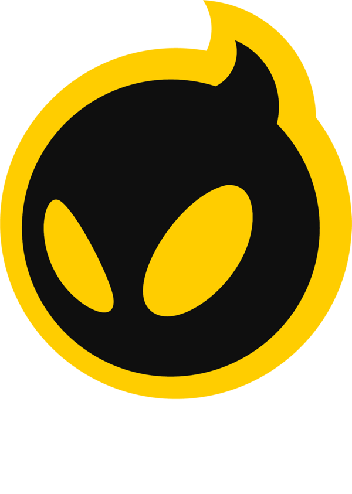
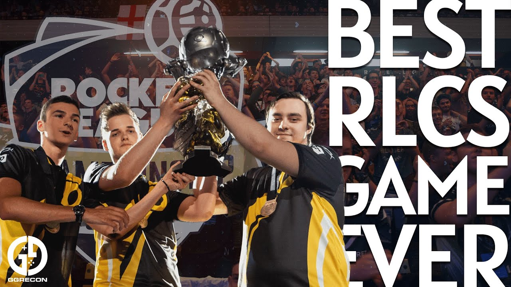
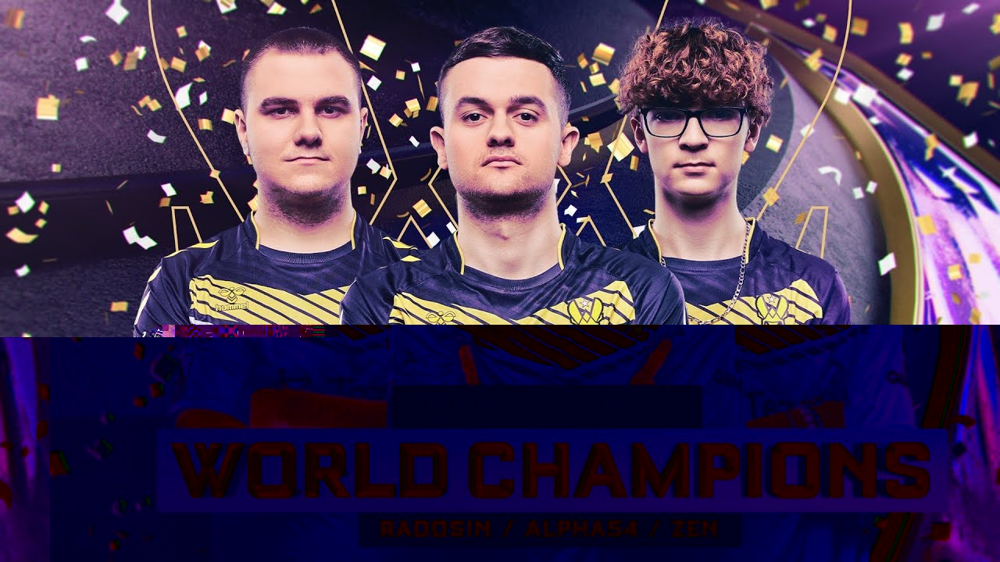
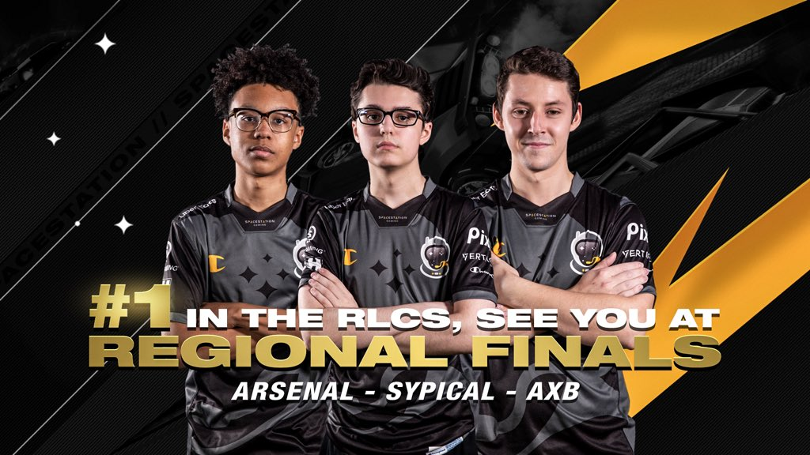

Los profesionales en Rocket League son jugadores destacados que participan en competiciones de alto nivel, tanto en torneos organizados por Psyonix como en eventos de esports gestionados por organizaciones y ligas independientes. Estos jugadores son conocidos por su habilidad excepcional, estrategia sofisticada y capacidad para trabajar en equipo en un juego que combina habilidades de conducción y precisión en un entorno de deportes electrónicos.
Estos profesionales participan en ligas y torneos como la Rocket League Championship Series (RLCS) y otras competiciones regionales e internacionales. Además de competir, muchos jugadores profesionales también son streamers populares en plataformas como Twitch, donde transmiten sus partidos y comparten consejos y estrategias con la comunidad.
¿Qué hacen? |
Equipos |
¿Quiénes son? |
Los profesionales de Rocket League son jugadores altamente capacitados que dedican su tiempo a entrenar intensamente y competir en torneos de élite. Participan en la Rocket League Championship Series (RLCS) y otros eventos, además de transmitir sus partidas en plataformas como Twitch. Además, gestionan patrocinios, desarrollan estrategias avanzadas y se mantienen actualizados en el metajuego para mantener su competitividad y éxito en la escena de esports.
-NRG Esports: Uno de los equipos más reconocidos en Norteamérica, con una fuerte presencia en la RLCS y otros eventos. -Team Vitality: Con sede en Europa, Vitality es conocido por contar con algunos de los jugadores más talentosos y carismáticos del juego. -Spacestation Gaming: Otro equipo estadounidense que ha demostrado un rendimiento sólido en la RLCS y competiciones internacionales. -Dignitas: Un equipo con una historia rica en el juego, conocido por su habilidad y tácticas innovadoras.
-Justin "Jstn" Morales: Conocido por su habilidad excepcional y su capacidad para hacer jugadas decisivas en momentos cruciales. Ha sido parte de equipos exitosos como NRG Esports. -Pierre "TurboPolsa" Silfver: Es considerado uno de los jugadores más exitosos en la historia de Rocket League, habiendo ganado múltiples campeonatos mundiales con diferentes equipos. -Alex "Kaydop" Courant: Otro jugador europeo destacado, conocido por su consistencia y habilidades defensivas. Ha sido parte de varios equipos campeones en la RLCS. -Mariano "SquishyMuffinz" Arruda: Popular en la comunidad por su estilo de juego creativo y habilidades acrobáticas en el aire.
|  |  |
El equipo de Rocket League Dignitas es una destacada organización en el ámbito de los deportes electrónicos, conocida por su éxito en competiciones de Rocket League. Dignitas ha sido hogar de algunos de los mejores jugadores y equipos en este juego, compitiendo a nivel mundial y ganando numerosos campeonatos. Su enfoque en la excelencia competitiva y su capacidad para reclutar y desarrollar talentos han consolidado a Dignitas como una fuerza significativa en el panorama del Rocket League profesional. |

|
 |
Team Vitality se ha establecido como uno de los equipos más dominantes y respetados en la escena europea de Rocket League. Conocidos por su habilidad mecánica excepcional y su juego táctico disciplinado, Vitality ha cosechado numerosos éxitos tanto a nivel regional como internacional. El equipo francés ha sido consistentemente fuerte en todas las fases de la RLCS, demostrando una capacidad impresionante para adaptarse a diferentes estilos de juego y meta del juego. Su estilo de juego se caracteriza por una combinación de juego rápido y coordinación fluida entre sus jugadores clave. Han sido campeones en múltiples ocasiones y han sido finalistas en eventos importantes, lo que subraya su dominio en el juego competitivo. |

|
 |
Originarios de los Estados Unidos, Spacestation Gaming se destaca por su versatilidad y habilidades individuales impresionantes. Han emergido como uno de los principales equipos de Norteamérica, compitiendo de manera consistente en las fases finales de la RLCS. Con un estilo de juego dinámico que se adapta bien a diferentes meta y situaciones de juego, Spacestation Gaming ha demostrado ser una fuerza competitiva formidable tanto en su región como a nivel mundial. |

|
NRG Esports es un nombre prominentemente reconocido en la escena competitiva de Rocket League. Este equipo estadounidense ha estado en la vanguardia del juego competitivo, destacándose por su consistencia y habilidades mecánicas superiores. Con jugadores talentosos y experimentados, NRG ha logrado múltiples éxitos tanto en competiciones regionales como internacionales. |